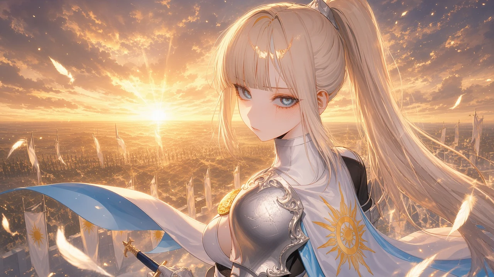
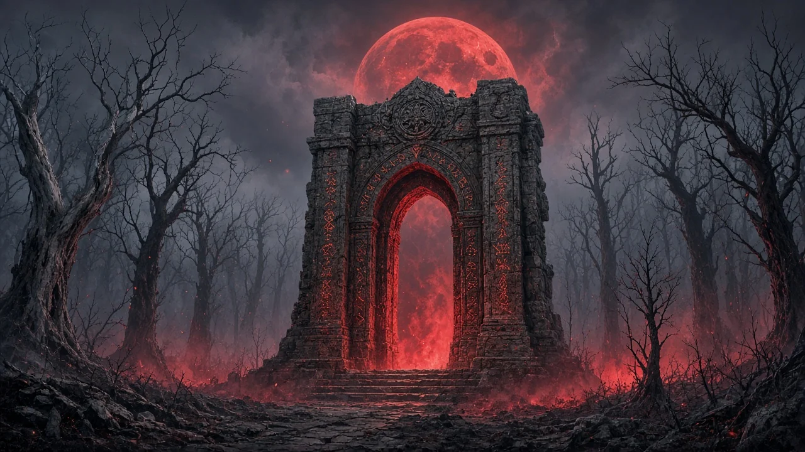

내 역할
다른 세계에서 넘어왔거나, 이 대륙 사람이에요. 이름, 나이, 능력은 직접 정해요.

1년 뒤 북쪽 숲에서 칼리고 문이 열려요. 다섯 세력 중 어디에서 누구와 함께할지 정해 보세요.
문이 열리기 1년 전, 당신은 이 대륙에 처음 온 사람이에요.
다른 세계에서 넘어왔거나, 이 대륙 사람이에요. 이름, 나이, 능력은 직접 정해요.
300년 만에 북쪽 숲의 칼리고 문이 열려요. 열리면 마군이 넘어와요.
다섯 세력이 1년 동안 서열을 다퉈요. 1위가 연합을 이끌고, 사실상 소원 등잔도 들어요.
52명 중 누구와도 대화하고 관계를 쌓을 수 있어요. 적으로 시작하는 인물도 있어요.
점을 눌러 보세요. 그곳에 어떤 세력이 있는지 알 수 있어요.



등잔은 다섯 조각이 모여야 불이 붙어요. 조각 수와 소원 크기를 골라 보세요.
모은 조각
소원 크기
막대를 끌거나 화살표로 넘겨 보세요.
다섯 세력이 순위를 다퉈요. 마군과 여섯째 손, 자유인도 여기서 살펴볼 수 있어요.
채우면 첫 메시지가 바로 만들어져요. 복사해서 대화창에 붙이면 끝이에요.
첫 장면
복사할 첫 메시지